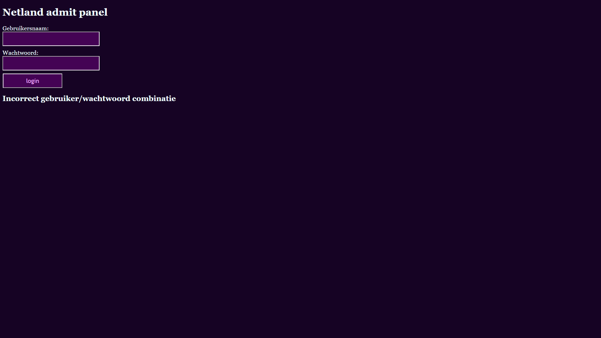
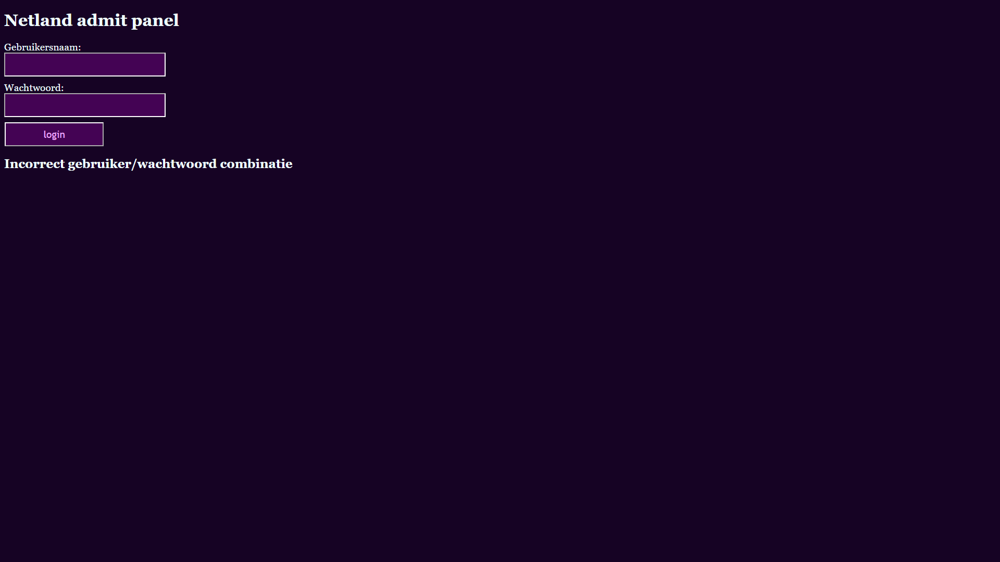

Project 1, Eerste blog

Het eerste project is mijn eerste blog die ik ooit heb gemaakt.
Het eerste project is mijn eerste blog die ik ooit heb gemaakt.
 

Hier is een database gemaakt waar gebruikersnamen en wachtwoorden bestaan en bepalen of je kunt inloggen.


Hier is nog een database met details van films/series met dynamisch een pagina die al de details geeft over de pagina.

Hier is een browser spel galgje gemaakt en het speciale is dat je je eigen woorden kunt gebruiken of een willekeurig woord uit een lijst, dit is het eerste project waar samenwerking gebruikt werd

Ik ben op gegeven moment bezig met een scrum project om de fundamentele van scrum te begrijpen en hoe je er als een groep samen mee werkt.